The city behind
the city.
70 rooms added to THE MUSEUM after the first 111: ten working worlds imagined around the collection, fifteen landmarks from Katz's to Hamilton Grange, ten rooms whose subject is motion, the Empire State and St. Patrick's, eight synagogues and the Ohel, Gramercy Park with its key, and fifteen more from the loop under City Hall to Columbus Park at seven, every one keeping New York time with something the visitor can do. Pick a room, then walk, inspect each work, or take the guided tour.
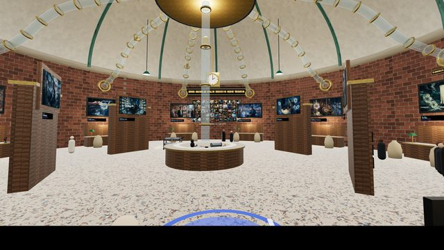
Letters through the void
A brick sorting rotunda under a copper dome and a skylight, the cast iron tubes converging overhead with brass collars, capsules sliding through, sorting desks and mail sacks below. Portraits become letters to the city.
Enter gallery ↗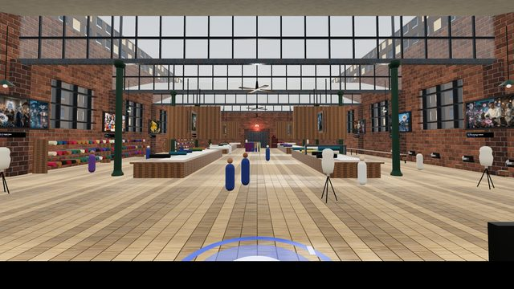
The pattern cathedral
A sawtooth roofed loft off Seventh Avenue: north light through industrial glazing on long cutting tables, bolt racks, dress forms, a Singer row, a freight elevator, a rack rolling the aisle. The New Yorkers hang on the brick piers and over the tables.
Enter gallery ↗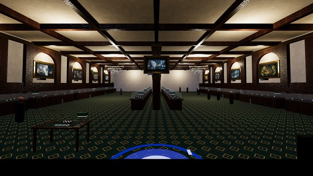
Forty-seven facets
An exchange floor off West 47th Street: dealer booths under green glass shades, loupes and scales, chandeliers turning, jewel niches with lit velvet, a vault standing open on a wall of safe deposit boxes. The New Yorkers hang in gilt, like gems.
Enter gallery ↗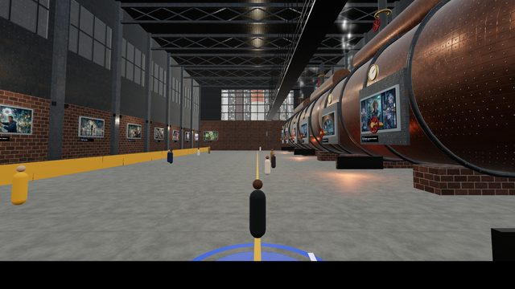
The city exhales
A cathedral scale boiler house on the East River: three riveted pressure vessels, a catwalk, valve wheels and gauges, steam leaking from the flanges, the orange and white stack through the high window. The New Yorkers hang on the boiler flanks and along the inspection wall.
Enter gallery ↗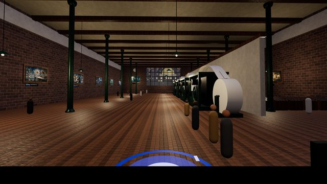
Tomorrow is wet ink
A Park Row press floor at night: giant paper reels turning, the web running through a line of presses, ink rollers, a composing room of type cases, the copy desk under green shades, a newsstand at the door and the World Building dome through the window. The New Yorkers hang along the press gallery.
Enter gallery ↗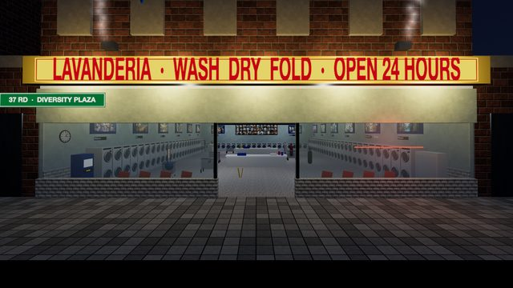
Spin cycle for a sleepless city
A 24 hour laundromat under the 7 train at 3 a.m.: a horseshoe of washers and stacked dryers turning behind round glass, folding tables down the middle, fluorescent light on the sidewalk, the works on enamel panels above the machines.
Enter gallery ↗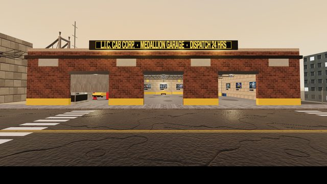
Every light is a fare
A medallion garage in Long Island City at the five o'clock shift change: roll up doors open to the low sun, a fan of numbered dispatch bays, a cab on the lift, the dispatcher in a glass booth under the radio mast, the works hung one to a bay and along the medallion wall.
Enter gallery ↗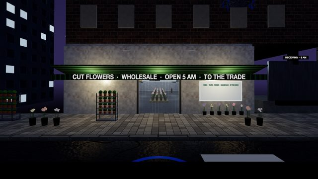
Before the flowers wake
A wholesaler's cold room on West 28th Street before dawn: strip curtains at the door, steel racks of buckets, tulips and roses by the hundred under frost coloured light, cold air pooling on the wet floor, the works on white fins floating over the flowers.
Enter gallery ↗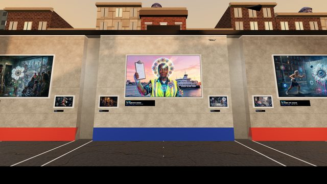
The fourth wall belongs to us
Three one wall handball courts on the Lower East Side at golden hour, the walls scaled up to monuments: low sun raking the concrete, a blue ball between wall and hand, the crowd along the chain link, the tenements and their fire escapes behind, the works as a civic triptych on the walls and portraits along the fence.
Enter gallery ↗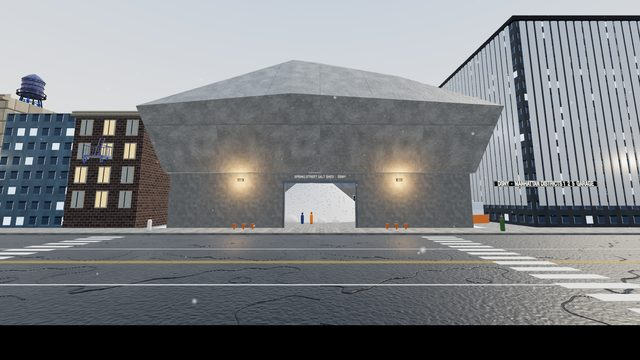
Winter stored as a mountain
The Spring Street Salt Shed: a faceted concrete crystal on the Hudson beside the sanitation garage in its skin of fins. Inside, five thousand tons of salt as a white mountain under the folded shell, plow blades against the wall, a loader idling, the works on the promenade around the pile.
Enter gallery ↗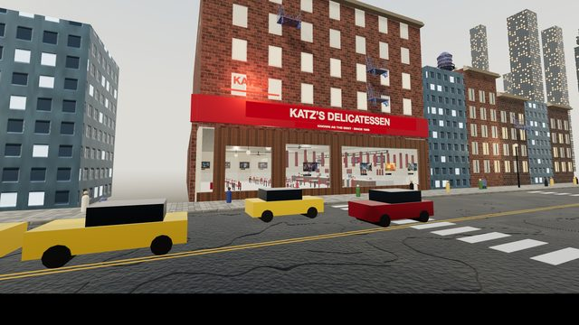
Katz’s: The portrait lunch
The corner of Houston and Ludlow since 1888: the red sign band, salamis in the window, a ticket at the door, the long cutting counter with its numbered stations, and the wall of regulars, every one of them a painted New Yorker.
Enter gallery ↗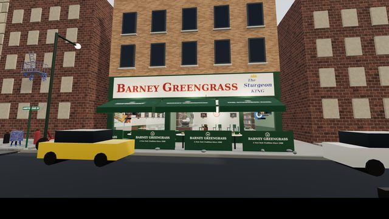
Barney Greengrass: Sunday regulars
The Sturgeon King on Amsterdam Avenue since 1929: green awnings under the red and blue sign, sidewalk tables behind the green rail, the appetizing counter with its boards, and the dining room where the regulars now hang where the murals were.
Enter gallery ↗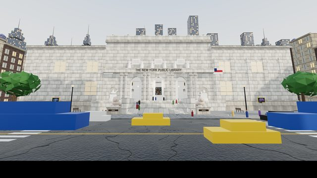
Between the lions
Fifth Avenue, Patience and Fortitude on their plinths, the readers on the steps, the three arched portals, then Astor Hall: white Vermont marble under a vault, twin stair flights to the landings, bronze candelabra, the rotunda beyond.
Enter gallery ↗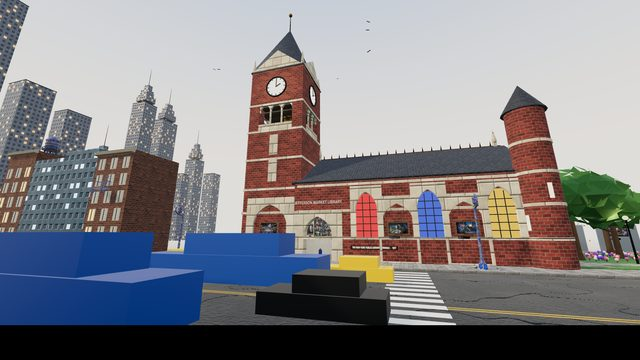
The clock keeps stories
Sixth Avenue at Tenth Street: the polychrome brick tower with its working clock, the stair turret, the garden through the fence, then the Gothic reading room under timber trusses, stained glass in the pointed windows, green lamps on the tables, the stacks.
Enter gallery ↗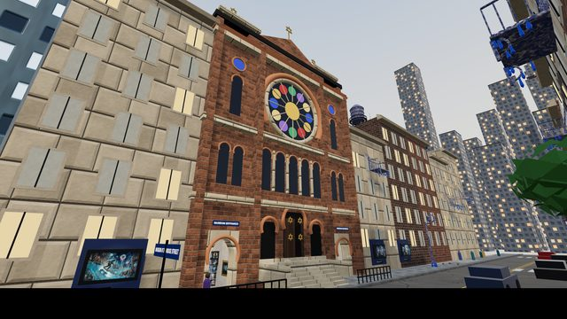
An immigrant constellation
The 1887 front of the Eldridge Street Synagogue on a Lower East Side street of tenements, with its horseshoe arches, twin towers and rose window. Go in by the museum doors in the towers: the New Yorkers hang on the lower level, and a stair climbs from there into the restored sanctuary, where gold stars cover the blue vaults, brass chandeliers hang over the pews and the round east window of 2010 glows above the ark.
Enter gallery ↗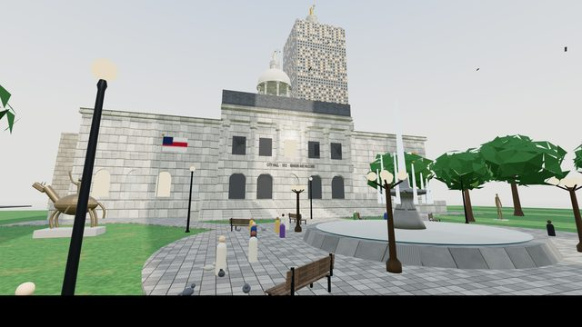
The public portrait
City Hall Park and its fountain, the marble front under the cupola, then the rotunda: twin marble stairs sweeping up to a ring of ten Corinthian columns under a coffered dome, the Governor's Room through its door, the portraits of the city between the columns.
Enter gallery ↗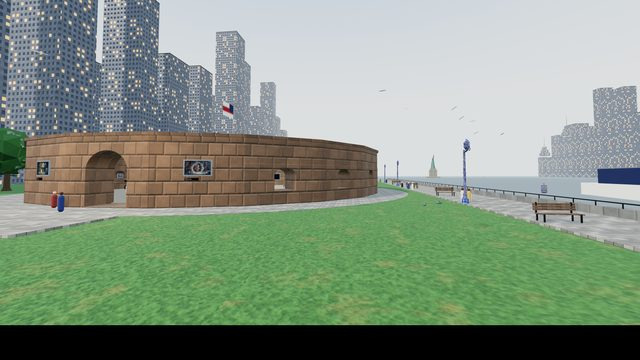
Arrivals in the round
The Battery promenade, the harbor with the Statue on the horizon, gulls, a ferry passing, then the round brownstone fort: an open court under a flag, cannon at the embrasures, the ticket booth, the works set into the gun ports around the ring.
Enter gallery ↗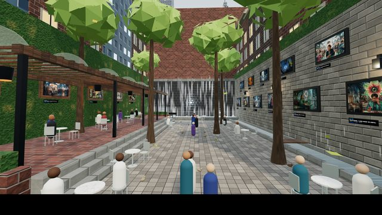
The waterfall room
East 51st Street, then the vest pocket park between two buildings: honey locusts, movable chairs, the raised west terrace under its trellis and acrylic domes, the runnel under the rough east wall, and the 25 foot waterfall filling the back, the works hung on the walls.
Enter gallery ↗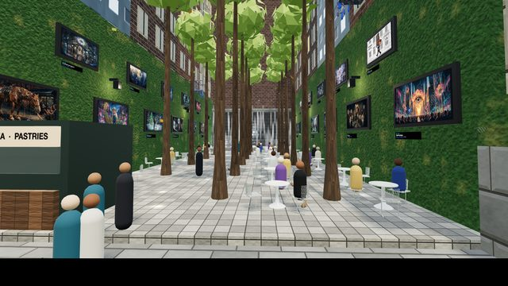
Seventeen honey locusts
Granite steps up from 53rd Street into the original vest pocket park: seventeen honey locusts on a grid, vertical lawns of ivy, Bertoia wire chairs and Saarinen tables, and the water wall drowning the traffic, a portrait in every tree bay.
Enter gallery ↗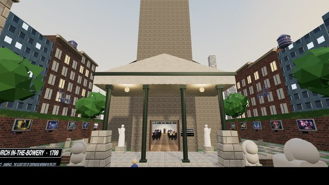
Poetry in the yard
Second Avenue at Tenth Street: the fieldstone church of 1799 under its 1828 steeple, the cast iron portico, the lions, the flat gravestones of the old Stuyvesant farm, then the plain white sanctuary set with folding chairs for the Poetry Project.
Enter gallery ↗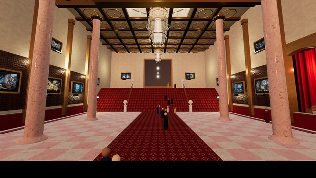
Before the curtain
Flatbush Avenue under the marquee and the vertical sign, through the bronze doors and the low ticket lobby into the foyer: gilt plaster, pink marble, a coffered ceiling with chandeliers, the red carpet to the grand stair, the auditorium curtain glimpsed through an arch.
Enter gallery ↗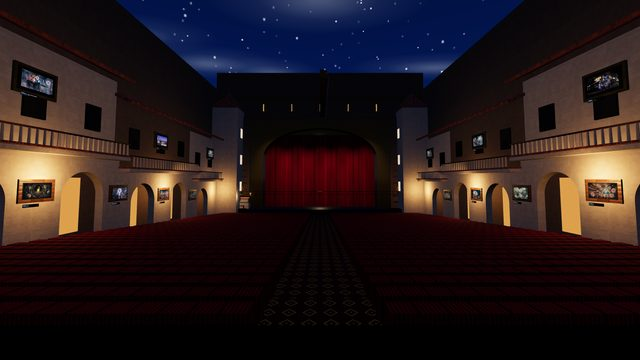
A sky inside Jamaica
John Eberson's atmospheric theatre: the auditorium is a Spanish courtyard at night, tiled roofs and balconies along the walls, a proscenium arch and a red curtain at the end, and over it all a deep blue sky with stars and drifting clouds. The works hang on the courtyard walls.
Enter gallery ↗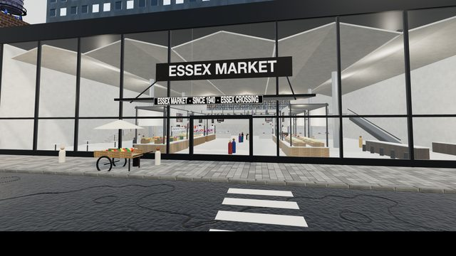
The city at the counter
Essex Street at Delancey, then the glass hall under its folded white ceiling: vendor islands under swaying pendants, fish on ice, the butcher, the coffee bar and its chalkboard, an escalator up to the long shared table on the mezzanine, the works on every stall front.
Enter gallery ↗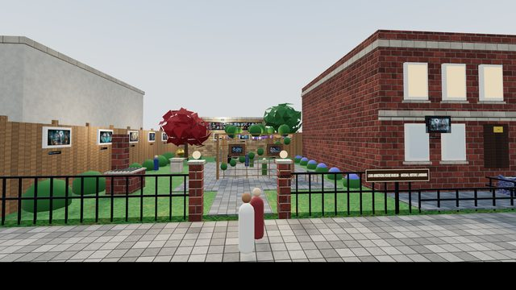
The garden listens
107th Street in Corona: the brick house with its stoop, then the garden behind the fence, the trellis, the koi pond, the brick barbecue, a trumpet on a plinth and a record turning on the patio, the neighbours passing, the 7 train on the elevated a few blocks off, the works hung on the fence, the trellis and the house wall.
Enter gallery ↗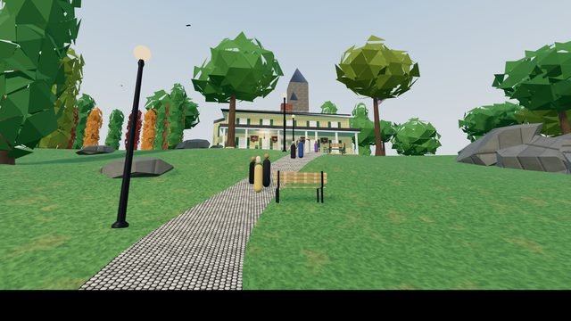
A house above the city
St. Nicholas Avenue, the park wall, then the climb: a gravel path switchbacking up the hill past the schist outcrop and the thirteen sweetgums to the pale yellow Federal house with its green shutters and wide piazza. Inside, the hall of miniatures and the two octagonal parlors, the piano, the dining table, a hearth lit for the afternoon, the works in gilt on the papered walls.
Enter gallery ↗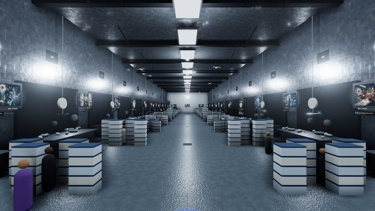
Four in the morning
The hour the city eats by and never sees: a refrigerated hall the length of three blocks, ice going down in mountains, forklifts running the centre aisle with their beacons turning, gulls working the rafters, and the buyers walking the row in headlamps and parkas. The New Yorkers hang on the stall fronts, at the height of a chalked price.
Enter gallery ↗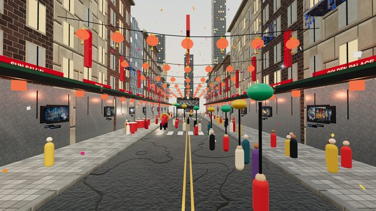
The lion comes down Mott Street
The narrowest parade in New York: a lion at every doorway, a dragon the length of half a block, confetti coming down like weather and not stopping, drums off the brick, lanterns strung overhead, and the whole street shoulder to shoulder in red. The New Yorkers hang on the shutters and the gates, at eye level, where the crowd is.
Enter gallery ↗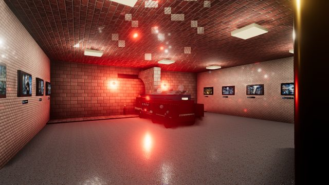
First due
A house that has been answering this corner since 1899: one bay, one rig, a brass pole through the ceiling, gear hanging ready in the order a person puts it on. Every twenty seconds the gong goes, the beacons start turning, and the door rolls up on Broome Street. The New Yorkers hang along the tiled bay walls, watching it happen.
Enter gallery ↗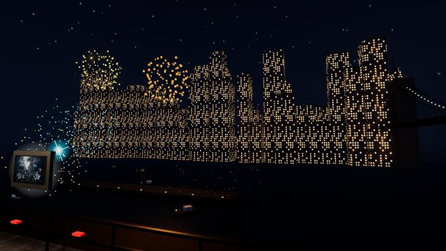
The Fourth over the East River
A third of a mile of cantilevered walkway over a running expressway, and once a year the best free seat in the city: barges on the black water, the skyline with its lights on, and eighty thousand shells going up in half an hour. The New Yorkers hang along the park wall and the railing, lit red, then green, then gold, then not at all.
Enter gallery ↗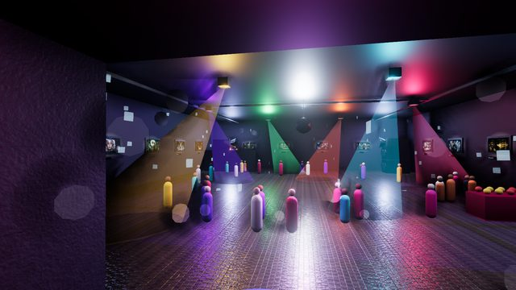
Two in the morning
A parking garage on King Street with a ramp for a lobby, a sprung floor, a sound system built for the room rather than the room for the system, and no liquor licence because nobody needed one. The New Yorkers hang where the light sweeps past them, on the black walls around the floor, and the mirror ball puts the rest of the room on top of them.
Enter gallery ↗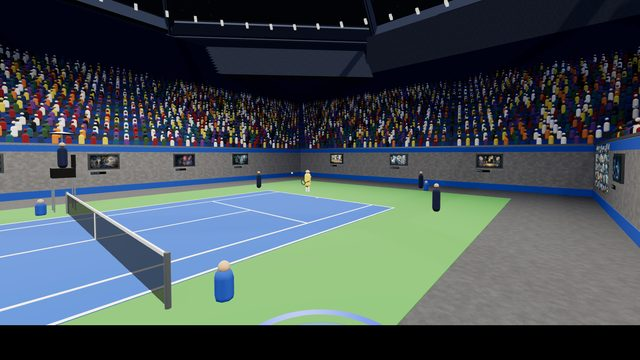
The night session
The largest tennis stadium in the world at nine at night in the first week of September: the roof open to the sky, twenty three thousand people in the bowl, a plane on its way down to LaGuardia, and two players trading ground strokes on the blue court while the wave goes round. The New Yorkers hang courtside on the wall at the foot of the lower bowl, where the sponsor boards would be, lit by the same lights as the match.
Enter gallery ↗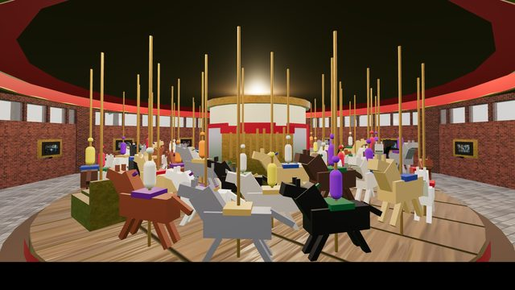
Fifty seven horses
A 1908 carousel found in a Coney Island trolley terminal and set down in Central Park in 1951 under an octagon of brick: fifty seven hand carved horses, two chariots, a band organ playing waltzes, and a quarter of a million riders a year. The New Yorkers hang on the six brick walls around the turning platform and outside on the two that face the path, so the horses pass every one of them once a minute.
Enter gallery ↗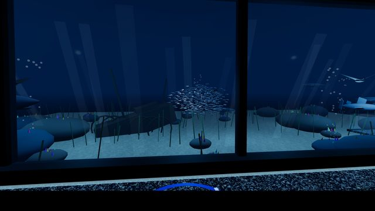
Ocean Wonders
The oldest aquarium in the country, on the boardwalk since 1957, and its biggest room since the hurricane: seven hundred and eighty four thousand gallons behind one long window, a wreck on the sand, sand tigers circling, rays flying over the glass tunnel, and a school of silver that turns as one. The New Yorkers hang on the dark wall opposite the window, lit by the water.
Enter gallery ↗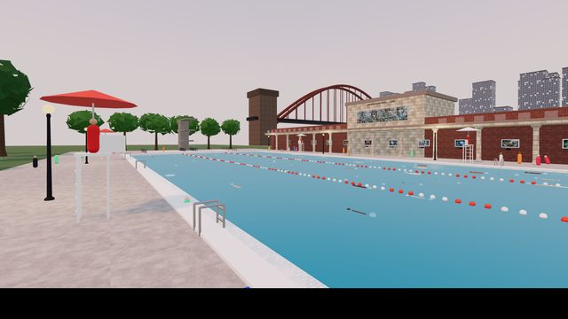
The finest in the world
Three hundred and thirty feet of water between two bridges, opened in the summer of 1936 and called the finest in the world by the man who paid for it. Lap swimmers, cannonballs, lifeguards on their chairs, the diving tower that outlived its pool, and Hell Gate to the north. The New Yorkers hang under the colonnade of the bathhouse, out of the sun, facing the water.
Enter gallery ↗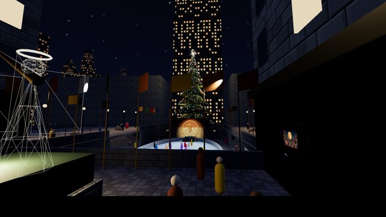
The tree and the rink
The sunken rink at the foot of the Channel Gardens, Prometheus in gold over the fountain, forty flags going round the parapet, skaters below and a Norway spruce above them with fifty thousand lights on it. The New Yorkers hang along the shop fronts of the Channel Gardens, between the wire angels, and down on the rink level either side of the fountain.
Enter gallery ↗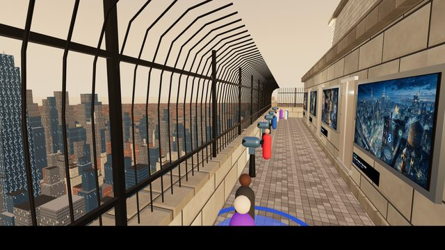
The eighty sixth floor
The open air terrace that wraps the eighty sixth floor, a thousand and fifty feet over Fifth Avenue at golden hour: the steel fence curling in over the parapet, the coin binoculars, the mast climbing to the antenna behind you, and the whole island laid out below, Midtown and the Chrysler to the north, the Hudson on fire to the west, the East River and Queens to the east. The New Yorkers hang on the limestone of the enclosed observatory between its windows, and more hang a lift ride down, in the Art Deco lobby under the gold and aluminium ceiling.
Enter gallery ↗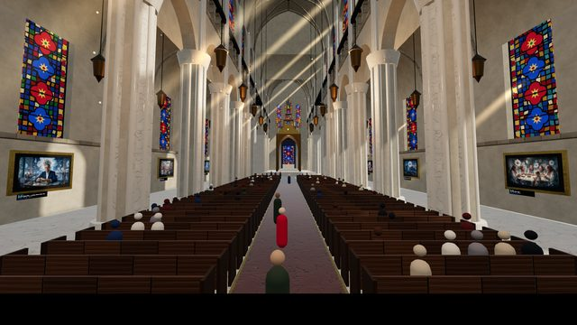
The nave on Fifth
The Gothic Revival nave on Fifth Avenue at eleven in the morning: thirty two white columns, rib vaults a hundred feet up, sun coming through the south clerestory in coloured shafts, the bronze baldachin over the high altar, the rose window and the great organ over the open doors, and a few hundred candles going in the transepts. The New Yorkers hang along the side aisles where the Stations of the Cross would be, under the windows, and at the ends of the transepts.
Enter gallery ↗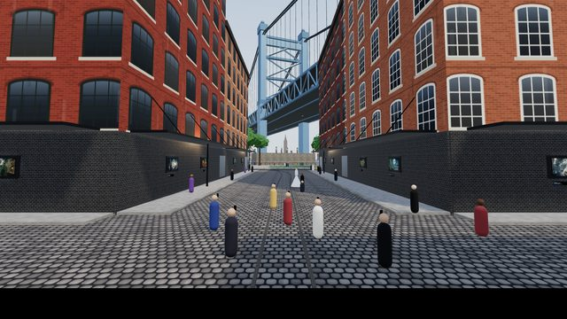
Washington Street
The corner of Washington and Water in DUMBO, where the old warehouse street runs down to the East River and the Manhattan Bridge tower stands at the end of it with the Empire State Building caught between its legs. Trains rumble across overhead, Jane's Carousel turns in its glass box at the water, and somebody is always in the middle of the cobbles taking the picture. The New Yorkers hang on the brick under the old loading dock canopies, where a gallery in this neighbourhood would hang them.
Enter gallery ↗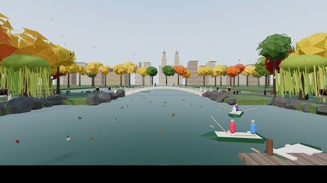
The bridge over the Lake
Bow Bridge on an October afternoon, seen from the east arm of the Lake the way everyone photographs it: the cast iron span in cream, its eight urns, the willows on the banks and the Ramble going gold behind, rowboats from the Loeb Boathouse sliding under the arch, and the twin towers of the San Remo standing over the trees on Central Park West. The New Yorkers hang on painters' easels along the banks and under the boathouse canopy, facing the paths.
Enter gallery ↗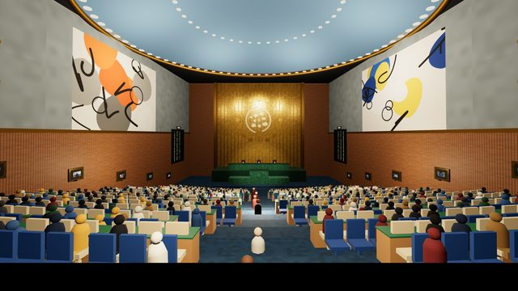
The gold wall
The largest room at the United Nations, on the East River at Turtle Bay: eighteen hundred seats in curving tiers, every member state with six of them, facing the green rostrum and the gold wall with the emblem of the world seen from above the North Pole. Two murals by Fernand Leger face each other across the hall, which this room answers in its own flat colours, and the interpreters work behind glass on both sides. The New Yorkers hang on the wood panels of the side aisles and the back wall, where the delegations walk in.
Enter gallery ↗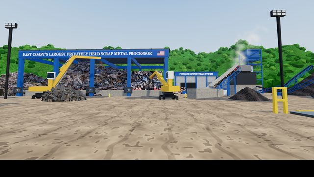
The yard in Owego
Seventeen acres of sandy yard in the Tioga County Industrial Park, in a valley of wooded ridges three hours up from the city: the place a great deal of New York's scrap steel comes to be shredded and sent back out. A gift room for Adam Weitsman, who opened the yard in 1997 and collects MLow. The New Yorkers hang where a yard can carry them: on steel plates bolted to the canopy columns, on plate stood on end in the yard, on the scale house and on the flanks of the parked trailers.
Enter gallery ↗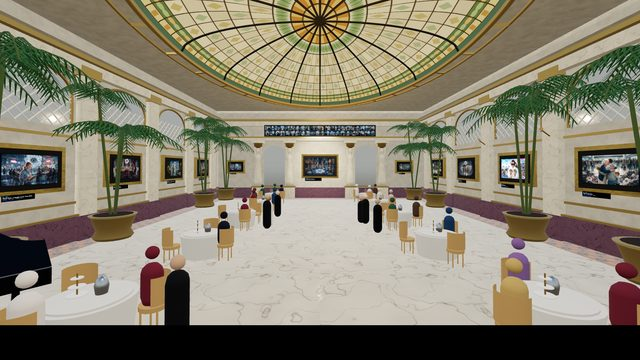
An afternoon at the Plaza
The Palm Court in the middle of the Plaza, where afternoon tea has been poured under a ceiling of stained glass since 1907. The palms stand in their planters along the trellis, the waiters work the aisle between the white cloths, the piano plays, and through the Fifth Avenue doors the Pulitzer Fountain splashes in Grand Army Plaza. The New Yorkers hang in the gilded bays between the pilasters, under the mirrors, where the room has always hung its finery.
Enter gallery ↗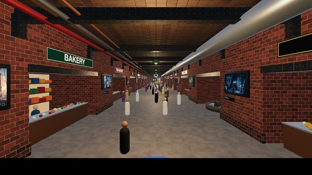
The biscuit factory
The long concourse of Chelsea Market, cut through the back lots of the old National Biscuit Company bakery where the Oreo was first made in 1912. Water pours from an old pipe into a basin by the Ninth Avenue door, the ducts and pipes run overhead under the iron beams, the stalls are busy and the clock keeps New York time, and at the far end the High Line crosses Tenth Avenue with people walking on it. The New Yorkers hang on the brick piers between the shopfronts.
Enter gallery ↗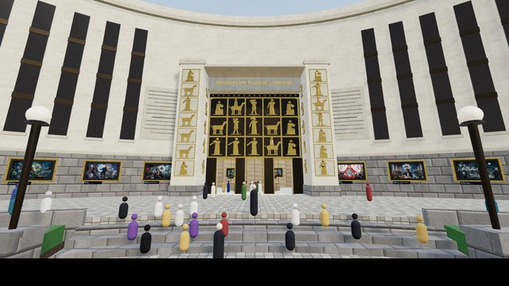
The golden book
The Central Library of the Brooklyn Public Library at Grand Army Plaza, the limestone building shaped like an open book, seen from the forecourt with its tall bronze entrance screen and its fifteen gilded panels shining in the middle of the curve. People sit on the steps, pigeons work the forecourt, traffic runs round the plaza behind you toward the Arch and the Bailey Fountain. The New Yorkers hang on the granite base of the curved front along the terrace, and inside, on the blond oak of the lobby.
Enter gallery ↗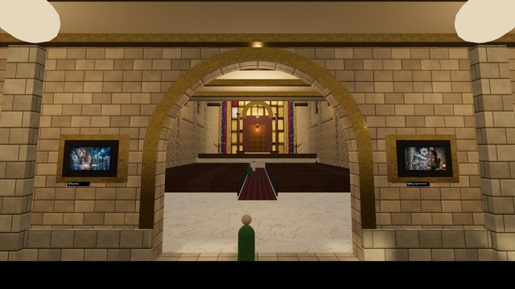
Temple Emanu-El
Just inside the bronze doors on Fifth Avenue, under the gallery, with the sanctuary opening ahead: one of the largest synagogue halls in the world, a painted coffered ceiling a hundred feet up, tall windows down both walls and, at the far end, the great arch in gold mosaic round the ark with the eternal light burning in front of it. The New Yorkers hang in the vestibule and in the museum galleries off it, never in the hall; Central Park is across the avenue behind you.
Enter gallery ↗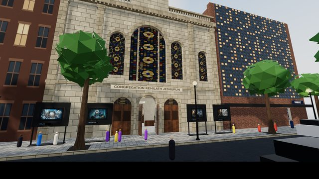
Kehilath Jeshurun
East 85th Street between Park and Lexington, from the pavement opposite: the 1902 limestone front of Kehilath Jeshurun between brownstones, children from the Ramaz school next door going by in twos, and New Yorkers stood along the kerb on the synagogue side. Through the doors are the lobby and the school corridor, where more of them hang, and the sanctuary with its galleries on columns, forty stained glass windows and the eternal light over the ark.
Enter gallery ↗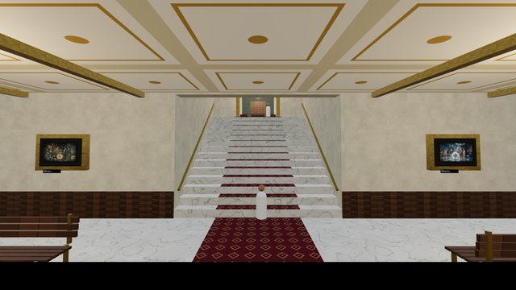
The Jewish Center
Inside the doors of the tall Neo-Classical house on West 86th Street that members call the first shul with a pool: New Yorkers on the lobby walls, a grand stair rising straight ahead to the sanctuary, whose eternal light you can see from the door, and a stair on the right going down to the pool, where the lanes are never empty. The social hall opens on the left.
Enter gallery ↗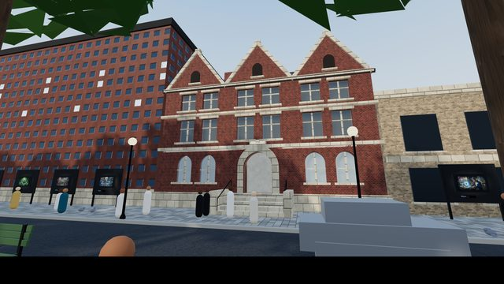
Seven seventy
The red brick house on Eastern Parkway with its three gables, built in 1920 as a doctor's office and bought by Chabad Lubavitch in 1940, now copied in dozens of cities round the world. Across the service road the Parkway malls run under the plane trees with their benches, and down the stair the great study hall is full: students learning in pairs at long tables, the tiered stands along the wall, the lamp lit before the ark. The New Yorkers stand on boards along the sidewalk and hang in the entrance hall and on the stair, never in the hall itself.
Enter gallery ↗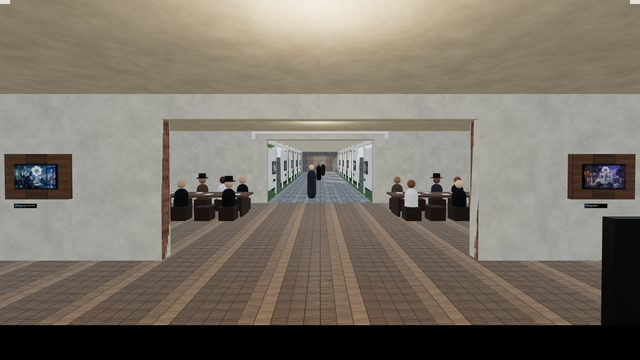
The Ohel
The resting place of the sixth and seventh Lubavitcher Rebbes in Montefiore Cemetery, Queens, reached through a house on Francis Lewis Boulevard that has been a visitors center, open day and night, since 1995. Visitors write their notes at the tables, walk the covered path between the headstones, light candles on the shelves of the antechamber and stand at the stone enclosure open to the sky. The New Yorkers hang only in the house and along the covered walk; the enclosure is left as it is.
Enter gallery ↗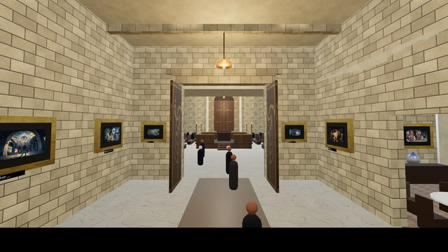
Jerusalem stone on 63rd
The Edmond J. Safra Synagogue, a Beaux-Arts house of Jerusalem stone on a townhouse block off Fifth Avenue, home since 2003 to a Sephardic congregation. You stand in the stone lobby with the bronze doors open onto the round sanctuary: twelve stone piers, a ribbed wooden dome lit round its rim and open to the sky at its crown, the reader's platform in the middle and the bronze ark in its niche with the lamp burning before it. The New Yorkers hang in the lobby, the Heritage Library downstairs, the social hall and the roof garden, never in the sanctuary.
Enter gallery ↗The oldest congregation
Congregation Shearith Israel, founded in 1654 and the oldest Jewish congregation in the country, in its fifth home: Arnold Brunner's 1897 temple front on Central Park West, four giant Corinthian columns over a flight of stone steps, the park across the avenue. Inside, the reader's desk faces the ark down the length of a Tiffany room of marble, brass and candle light, and off the lobby the Small Synagogue keeps the colonial furniture of 1730. The New Yorkers hang on boards on the pavement, in the lobby and down the corridor to the parsonage house.
Enter gallery ↗Two towers on 67th
Park East Synagogue, built in 1890 by Schneider and Herter: a Moorish Revival front of red brick and pale stone on East 67th Street, two unequal towers, striped arches over the doors and a rose window between them, with the Park East Day School next door letting out. Inside, galleries on slender columns run round a painted and gilded room lit through coloured glass. The New Yorkers hang on boards on the pavement, in the vestibule, and down the school corridor.
Enter gallery ↗The locked park
The last private park in Manhattan, two acres of gravel paths, planting and old trees behind a locked iron fence, with Edwin Booth on his pedestal in the middle. The New Yorkers hang on the railings facing the street, under the hotel awning and on the fronts of the clubs on Gramercy Park South. Only the houses round the square hold keys, and somewhere on this block one is waiting to be found: find it and the gate opens.
Enter gallery ↗The loop under City Hall
The first station of the first subway, opened in 1904 and closed to passengers at the end of 1945, still the loop every 6 train uses to turn round under City Hall Park. You stand on the curved platform under Guastavino tile vaults with chandeliers hung from their centres and leaded glass skylights letting in a little of the park above, while a train of silver cars comes slowly out of one tunnel mouth and round into the other. The New Yorkers hang on the curved platform wall, in the mezzanine up the stair and in the passage toward the park.
Enter gallery ↗Eighty feet under Liberty Street
The Federal Reserve Bank of New York on Liberty Street, a Florentine palazzo of rusticated limestone and sandstone with wrought iron lanterns at its door, and the strangest basement in the city eighty feet below it, resting on the bedrock of Manhattan. You come in off the street through the banking hall, take the elevator down, and walk the corridor to a steel cylinder that turns to open the way into the cages of stacked bars. The New Yorkers hang in the hall, in the corridor and in the scale room, never on the cages.
Enter gallery ↗The Greenmarket and the Metronome
Union Square Park on a market day: white canopy stalls on the north and west plazas, the lawn behind its iron fence under the London planes, the 1932 pavilion at the north end, the equestrian Washington of 1856 at the south end, skaters on the south steps and the subway kiosks beside them. Across 14th Street the Metronome counts the real New York time on fifteen digits, the seconds since midnight on the left and the seconds to midnight on the right. The New Yorkers hang on the stalls, the fence, the pavilion and the boards by the steps.
Enter gallery ↗The lawn behind the library
Bryant Park on the block behind the New York Public Library, with the stacks under the lawn. Green folding chairs by the hundred on the gravel promenades under the London planes, the granite fountain playing on the upper terrace at the Sixth Avenue end, Le Carrousel turning on the south side, the reading room and the kiosks, ping pong, and the library's long rear elevation over its terrace. After dark the film screen at the west end lights up and the lawn fills with people sitting to watch. The New Yorkers hang on the library's arcade, the kiosk flanks and boards on the fountain terrace.
Enter gallery ↗The Little Red Lighthouse
Jeffrey's Hook Light, forty feet of red cast iron on a rock in the Hudson at the foot of Fort Washington Park, with the George Washington Bridge crossing the sky above it: the near tower of bare steel lattice rising out of the frame, two decks of traffic, the cables dropping to the far tower on the Palisades side. You stand on the greenway with the river on your left, the railroad behind the trees on your right, and the lighthouse door open. The New Yorkers hang on the seawall, in the picnic shelter, on the fence panels and inside the tower up its stair.
Enter gallery ↗A room and a garden
Louis Kahn's memorial to Franklin D. Roosevelt at the southern tip of Roosevelt Island: the wide granite stair, the lawn narrowing between two allées of little leaf lindens to the Room at the point, its granite blocks open to the East River, and the bronze head in its niche as a plain form. The United Nations and Midtown stand across the water to the west, Long Island City to the east, the Queensboro Bridge to the north, and the Smallpox Hospital ruin behind you. The Room holds no art. The New Yorkers hang on the stair walls, on granite panels behind the trees, and inside the ruin as an exhibition in the shell.
Enter gallery ↗The sea lion pool
The Central Park Zoo as Kevin Roche rebuilt it in 1988: the round sea lion pool in the middle of the garden with its rock island and its glass rim, the brick pergola on its piers all round, the Arsenal of 1851 on the east side, the penguin house in its cold blue light on the west, and the Delacorte Musical Clock on the arch to the Children's Zoo. The sea lions swim their loop and haul out on the rock, a keeper comes to the rail with a bucket at the real feeding hours and a crowd gathers, and on the hour and the half hour by the New York clock the bronze animals turn round the clock while two monkeys strike the bell. The New Yorkers hang on the piers of the pergola facing the pool, on the front of the Arsenal, beside the penguins and on the entrance walls.
Enter gallery ↗Shakespeare in the Park
The Delacorte Theater on a summer night, the free Shakespeare in the Park of the Public Theater. You stand at the top of the bowl with the house full below you, five players moving between their marks on the open stage, the lights sweeping and changing colour, Turtle Pond black behind the stage with fireflies over it and Belvedere Castle lit on Vista Rock above, a moon over the trees. Before eight the house lights are up and the stage waits; from eight the house goes dark and the play is on. The New Yorkers hang on the theatre's outer wall, in the lobby and on the boards along the ticket line, never on the stage.
Enter gallery ↗The last week of April
Brooklyn Botanic Garden at the top of the cherry season: the Cherry Esplanade with its double rows of Kanzan cherries in full pink bloom either side of the long lawn, the Sakura Matsuri crowd picnicking under them, and beside it the Japanese Hill and Pond Garden with its vermilion torii standing in the water, the viewing deck, the shrine on the hill and the koi that come to the rail when you do. The New Yorkers hang on screens inside the Palm House at the head of the lawn, on the back wall of the viewing deck, and on boards between the benches.
Enter gallery ↗The shelf over the expressway
The Brooklyn Heights Promenade: a third of a mile of hexagonal block pavement and iron railing cantilevered over the two decks of the Brooklyn Queens Expressway, with Brooklyn Bridge Park and the harbour below and all of Lower Manhattan straight across the water. Behind you the gardens and the backs of the Heights houses, beside you the benches, the dog walkers and the kids on scooters, and under your feet the traffic you can hear but only glimpse through the railing. The New Yorkers hang on the garden fences facing the walk, on the walls of the Montague Street entrance and in the pergola at the north end.
Enter gallery ↗The cube at Astor Place
Astor Place, where the East Village meets NoHo: Tony Rosenthal's black steel cube balanced on one corner in the middle of the plaza, the cast iron subway kiosk beside it, Cooper Union's brownstone Foundation Building across Cooper Square and the slotted steel skin of 41 Cooper Square beyond, skaters going round, students crossing, buses on Fourth Avenue. Walk up to the cube and lean on it: it turns, and slowly comes to rest. The New Yorkers hang under the Foundation Building's arcade, on the plaza face of 41 Cooper Square, in the theatre's poster cases on Lafayette Street and on boards round the plaza.
Enter gallery ↗The Queens Night Market
The Queens Night Market on a Saturday night in Flushing Meadows Corona Park, on the lot beside the New York Hall of Science: a hundred white tents in three lanes under string lights and paper lanterns, grills smoking, thousands of people eating their way from one country to the next, a band on the stage at the far end, the Great Hall's wall of cobalt glass glowing behind it, the rockets of Rocket Park standing in the dark and the Unisphere lit far off across the park. Walk into the crowd at the stage and it cheers. The New Yorkers hang on the tents' end panels, on boards by the entrance, beside the stage and on the Great Hall's wall.
Enter gallery ↗The lights of Dyker Heights
A block of Dyker Heights in the middle of December, after dark, with snow coming down: detached brick and stone houses on their lawns, every roofline, column, window and tree wrapped in thousands of lights, toy soldiers, nutcrackers, snowmen, angels and reindeer on the lawns, a display that turns, tour buses at the kerb and a crowd on the sidewalk with hot cups. The New Yorkers hang in lit gilt frames on the fences and lawn displays and on the garage doors, facing the sidewalk with everything else.
Enter gallery ↗Three in the morning at Hunts Point
The Hunts Point Produce Market at three in the morning, the busiest hour of its day: a refrigerated warehouse a third of a mile long with numbered dock doors, trailers backed in with their reefers running, forklifts racing pallets along the dock under sodium light, buyers with hand trucks, a coffee cart, breath in the cold and the Bronx night over the yard. The New Yorkers hang on the dock wall between the doors, in the dispatcher's office, and on a pallet of framed works stacked on the dock as if they came in with the produce.
Enter gallery ↗Columbus Park at seven
Columbus Park at seven in the morning, on the ground that was Mulberry Bend: two tai chi groups moving as one on the plaza, crowds of elders three deep round the xiangqi tables under the planes, music under the pavilion of 1897 at the north end, pigeons underfoot, delivery bikes on Mulberry Street and the tenements with their fire escapes catching the first sun. Across Baxter Street to the west, the cleared lot where the Tombs stood until 2024 and the towers of the Criminal Courts Building. The New Yorkers hang on the pavilion's back wall, on the park's iron fence facing in, on the handball wall and on the courts' fence, and a census wall covers the limestone comfort station of 1934.
Enter gallery ↗The hall New York lost
The Pennsylvania Station of 1910, the station New York pulled down from October 1963, raised again as the census hall of the New Yorkers. You come in off Seventh Avenue through the Doric colonnade and a row of brass turnstiles, down the arcade and the grand stair into the travertine waiting room under its coffered vault, where light falls through the lunettes on the side the real sun is on. Past the census desk the hall breaks: one side intact, the other half demolished under a swinging ball, and beyond it the steel and glass concourse at night, drawn in dots. Stand still before any work and it comes apart into colour; give your wallet or name at the desk and a light finds yours.
Enter gallery ↗The glass house
The New York Crystal Palace of 1853, the iron and glass hall of the first world's fair in America, which stood where Bryant Park is and burned to the ground in 1858, raised again as a gallery. You come off Sixth Avenue into a Greek cross of glass under a stained glass dome that throws its colours across the floor wherever the real New York sun puts them. Red damask screens down the nave, an iron fountain, a beam engine with its flywheel turning, and in the north arm the evening it burned, the glass melting into signal. Step onto the open platform under the dome and it carries you up into the colour, the rope is cut, and the pawls hold. Stand still before any work and the dome finds it.
Enter gallery ↗